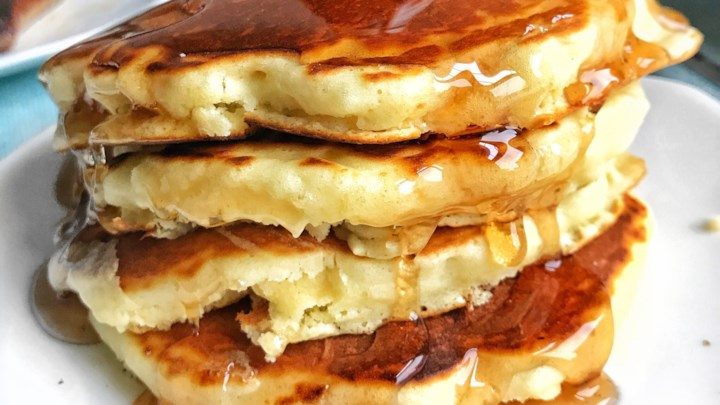

From Scratch Pancakes
Ingredients
- 1 1/2 cups all-purpose flour
- 3 1/2 teaspoons baking powder
- 1 teaspoon salt
- 1 tablespoon white sugar
- 1 1/4 cups milk
- 1 egg
- 3 tablespoons butter, melted
Directions
- In a large bowl, sift togrther the flour, baking powder, salt and
sugar. Make a well in the center and pour in the milk, egg and melted butter;
mix until smooth.
- Heat a lightly oiled griddle or frying pan over medium high heat.
Pour or scoop the batter onto the griddle, using approximately 1/4 cup
for each pancake. Brown on both sides and serve hot.

Recipe Link
Contact Me
Email me
The University of Montana
32 Campus Drive
Missoula, MT 59812